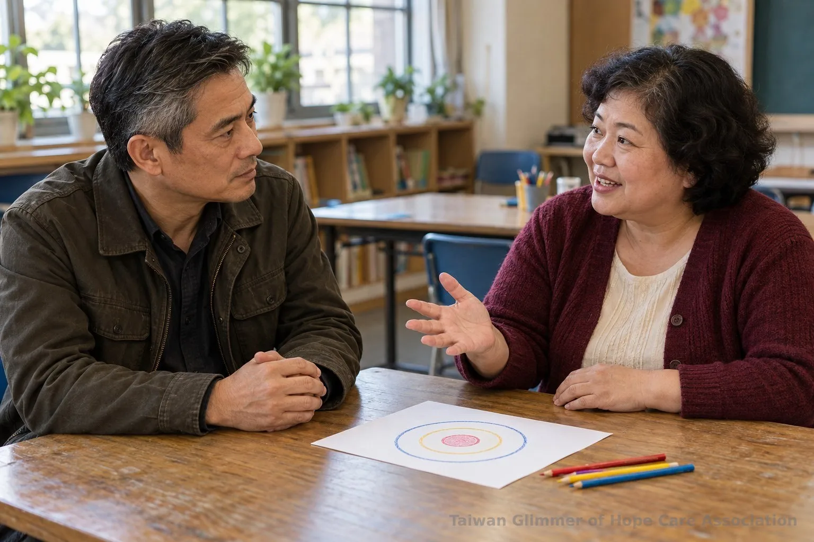
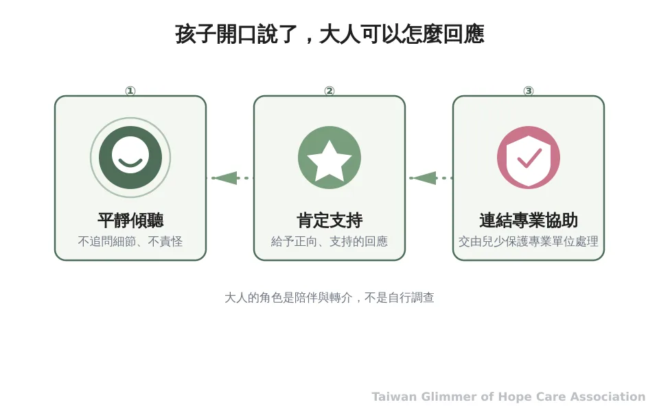
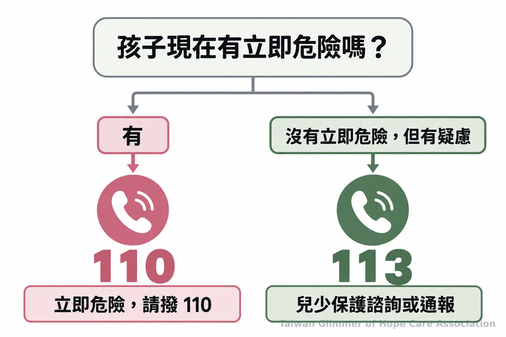

兒少性侵與熟人誘騙，家長老師要留意的 4 個訊號
熟識關係中的信任可能被利用，但單一互動不能定案。認識 grooming 的可能樣態、家長老師可觀察的界線變化，以及孩子透露不安時的回應與求助方式。
一則兒少性侵新聞出來，大家都會問：「為什麼沒有人早點發現？」能看見線索的大人可能就在孩子身邊。熟識不等於安全，親近也非危險證據；要看信任是否被用來要求保密、隔開照顧者，或讓孩子接受不舒服的互動。
一、熟識關係為什麼也要留意界線？
兒少性侵可能發生在熟識關係中，但不能只憑熟識判定某人有侵害行為。大人可以看互動脈絡與界線變化，有疑慮交由正式管道評估。
保護服務司公開「性侵害案件被害人年齡與兩造關係交叉統計」。讀表要確認年度、年齡範圍及關係分類；通報案件不等於實際發生率，未核實附件數值前，不宜用比例概括孩子的處境。保護服務司統計資料
「熟人」可能是親友、照顧者或師長。讓孩子知道，不舒服的接觸可以拒絕，也能告訴可信任的大人。

二、誘騙 grooming 可能如何逐步發展？
Grooming 可用來描述逐步建立信任、試探界線並增加隱密性的互動，但每個情況不會照固定劇本發展。送禮、關心或單獨談話本身都不足以判定誘騙，要看是否出現控制、保密要求或孩子難以拒絕等整體變化。
互動可能從特別照顧開始，之後要求孩子對家人保密，或把聯絡移到照顧者不易察覺的地方。若孩子拒絕後遭到生氣、冷落或施壓，大人要留意權力差距。這些是可能樣態，不是固定流程或犯罪判定清單。
孩子可能因信任或怕被責怪而未求助。讓孩子知道，令人害怕的秘密可以告訴大人；若一時沒得到回應，也能再找別人。
三、家長和老師可以看見哪些變化？
留意互動是否變得排他、隱瞞，或讓孩子不敢拒絕；單一行為和情緒變化都不能單獨證明性侵已經發生。平時談清楚界線、讓孩子知道可以找誰，是大人能做的準備。
留意大人是否排除其他照顧者、要求孩子隱瞞互動，或在孩子拒絕後施加情緒壓力。這些線索用來尋求協助，不代表家長或老師應自行查案、盤問孩子或指認犯罪。
告訴孩子身體由自己作主，不舒服的接觸可以拒絕。和孩子約定主要及替代求助對象，讓他知道還能向誰開口。
兒少性侵害揭露的系統性回顧指出，缺乏支持、擔心負面後果、自責與羞愧可能阻礙孩子開口；合乎年齡的詢問及支持性回應有助揭露。Lemaigre 等人，2017
「孩子是需要被鼓勵、被肯定的。」— 台灣微光希望關懷協會理事長林秀霞

四、微光如何陪伴孩子認識情緒？
微光透過在地合作據點，每月舉辦一堂藝術陪伴課，從藝術作品帶出情緒主題。課程讓孩子畫出想法、分享作品，不以畫得像不像或好不好作為標準。
微光在瑞芳愛鄰、板橋明穗與中壢宣愛設有據點，每月一堂藝術陪伴課。課程以藝術作品帶出情緒主題，如「心情的顏色」、夏卡爾夢想花園、秀拉點描及馬蒂斯拼貼。孩子替作品命名、分享想法，也練習說「我看到……」「我喜歡……」。畫作不能用來診斷或判定受虐；有疑慮應尋求正式協助。
照片與紀錄，請見〈桃園第一個據點開課：中壢宣愛「心情的顏色」〉、〈瑞芳愛鄰據點：跟著夏卡爾，飛進我的夢想花園〉。
五、發現疑慮後如何求助？
有疑慮可撥 113 保護專線諮詢或通報；若孩子有立即人身安全危險，先撥 110。一般民眾、老師與志工不必自行調查或判斷犯罪是否成立。
孩子透露不安時，先聽、不責怪、不逼問細節，也別承諾絕對保密。可以回應「謝謝你告訴我」，再向專線人員說明已知情況，不必先自行查證。衛福部提供兒少保護資源；113可諮詢或通報，立即危險聯絡110。衛福部兒少保護資源｜113 保護專線介紹
先和孩子約定遇到不安時可找哪位大人；有疑慮撥 113，緊急狀況撥 110。
- 熟識關係中的信任可能被利用，但單一互動不足以判定誘騙或犯罪。
- 留意排他、隱瞞與拒絕困難等互動變化；孩子開口時先聽並給予支持。
- 疑似兒少受害可撥 113 諮詢或通報，立即危險撥 110。
身體界線｜系列二之 3

常見問題
Q1：兒少性侵加害者多半是熟人嗎？
保護服務司有年度交叉統計；通報案件不等於實際發生率，比例須核對附件。
Q2：送禮或特別關心就是 grooming 嗎？
不是。單一送禮或關心不能判定誘騙，要看是否伴隨保密要求、排除照顧者、試探界線或讓孩子難以拒絕。
Q3：孩子沒有立刻說出來，代表沒有發生嗎？
不能這樣判斷。害怕被責怪或缺少支持可能讓孩子難以開口；大人可先支持並尋求協助。
Q4：家長或老師需要先問清楚所有細節嗎？
不需要自行盤問或調查。先聽孩子說、避免責怪，再向 113 諮詢或通報；有立即危險時撥 110。
Q5：孩子遇到不舒服的接觸可以怎麼做？
孩子可以拒絕，也可以告訴可信任的大人；平時可先約定求助對象。
參考文獻
- 衛生福利部保護服務司。性侵害案件被害人年齡與兩造關係交叉統計。https://dep.mohw.gov.tw/dops/cp-1303-59308-105.html
- 衛生福利部。兒少保護。https://www.mohw.gov.tw/fp-190-233-1.html
- Lemaigre C, Taylor EP, Gittoes C. (2017). Barriers and facilitators to disclosing sexual abuse in childhood and adolescence: A systematic review. Child Abuse & Neglect, 70, 39–52. https://pubmed.ncbi.nlm.nih.gov/28551460/
本文同步刊於 appi.news。